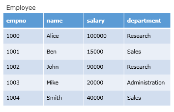
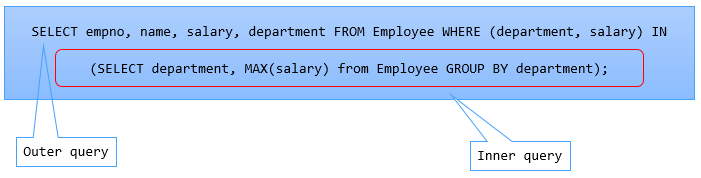

Inner query returns multiple columns to outer query.
Consider the following Employee table. We want to fetch the details of employees drawing highest salary in each department

A sub-query for the stated requirement can be written as follows:
